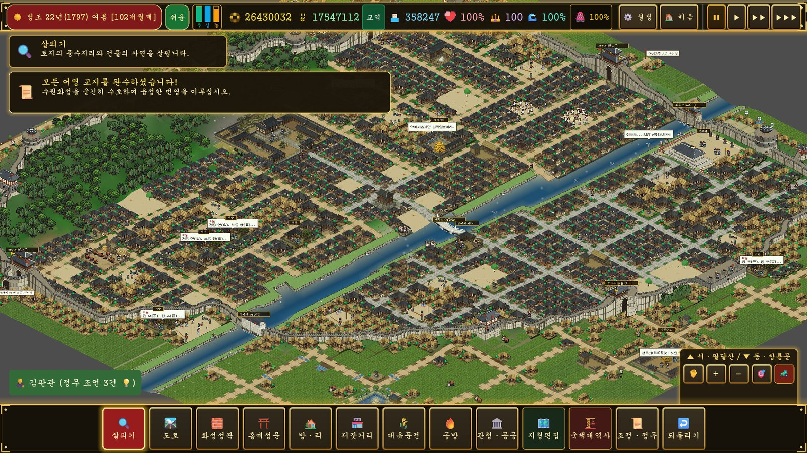

화성성역 — 정조의 24년 · 사전학습
정조와 수원 화성
게임을 시작하기 전에, 진짜 역사를 먼저 만나 봐요!

게임을 시작하기 전에, 진짜 역사를 먼저 만나 봐요!

김판관의 어명 교지를 순서대로 따라가면 도시가 저절로 모양을 갖춰요.
여름 장마가 오기 전에 제방을 쌓고, 백성의 억울함을 들어줄 관아를 일찍 지어야 민심이 떨어지지 않아요.
백성의 마음(민심)이 45% 아래로 떨어지면 도적이 나타나요. 백성을 아끼는 정조가 되어 봐요.
모두 15문제예요. 틀려도 괜찮아요. 해설을 보며 다시 배우면 돼요.
배운 내용을 얼마나 기억하나요? 모두 15문제예요. 답을 고르면 바로 정답과 해설이 나와요.